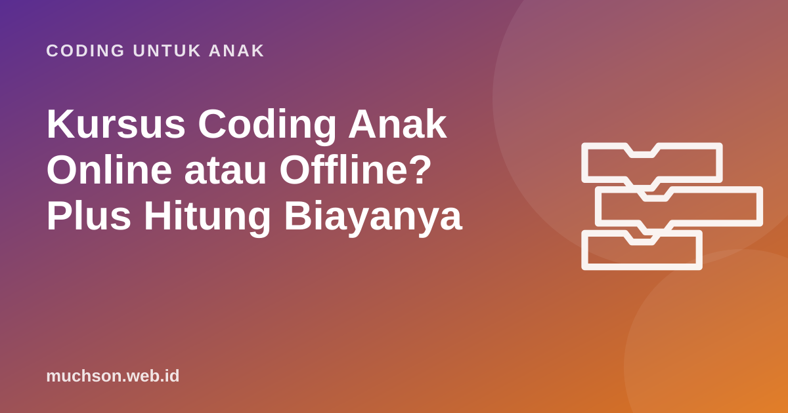

Beranda › Artikel › Coding untuk Anak
Coding untuk AnakKursus Coding Anak Online atau Offline? Plus Hitung Biayanya
Setelah pandemi, kursus coding online menjadi pilihan umum, tetapi banyak orang tua masih ragu: apakah anak bisa fokus di depan laptop, dan apakah hasilnya setara dengan kelas tatap muka? Artikel ini membandingkan keduanya secara jujur dan memberi kalkulator untuk menghitung biaya per jam belajar.

Perbandingan singkat
Untuk coding khususnya, kelas online punya keunggulan yang sering terlewat: anak belajar di komputer yang akan ia pakai sehari-hari, sehingga proyeknya tersimpan dan bisa dilanjutkan setelah kelas. Di kelas offline, anak kadang memakai komputer tempat kursus dan proyeknya tertinggal.
Syarat agar kelas online efektif
Kelas online untuk anak SD paling efektif bila kelompoknya kecil, guru sering meminta anak berbagi layar, dan sesi diselingi tugas mandiri. Kelas berisi puluhan anak dengan kamera mati cenderung berubah menjadi tontonan.
Bagaimana dengan rentang fokus anak?
Kemampuan anak mempertahankan perhatian berkembang seiring usia. Karena itu, kelas yang baik untuk anak SD, baik online maupun offline, memecah waktu menjadi bagian pendek: penjelasan singkat, praktik, berbagi hasil, lalu tantangan. Sesi 60-90 menit masih efektif asalkan anak lebih banyak mengerjakan daripada mendengarkan.
Hitung biaya per jam
Harga bulanan sulit dibandingkan karena jumlah dan panjang sesi berbeda-beda. Ubah semuanya menjadi biaya per jam belajar, lalu pertimbangkan juga biaya tersembunyi seperti transportasi.
Biaya per jam hanyalah satu sisi. Kelas yang lebih murah tetapi berisi 30 anak bisa jauh lebih kecil manfaatnya daripada kelas sedikit lebih mahal dengan 6 anak dan umpan balik dari guru.
Kapan memilih offline?
- Anak sangat kecil (di bawah 7 tahun) dan belum mandiri memakai komputer.
- Anak butuh suasana sosial untuk termotivasi.
- Rumah tidak punya perangkat atau internet yang memadai.
- Programnya melibatkan perangkat fisik seperti kit robotik.
Kapan memilih online?
- Anak sudah lancar memakai laptop dan mouse.
- Waktu atau biaya perjalanan menjadi beban.
- Pilihan kursus berkualitas di kota Anda terbatas.
- Anda ingin anak menyimpan dan melanjutkan proyek di komputernya sendiri.
Model gabungan
Banyak keluarga memilih model gabungan: platform belajar mandiri untuk latihan harian, ditambah sesi bersama guru untuk umpan balik. Model ini yang saya pakai di PixelKode: paket Mandiri untuk belajar sendiri dengan pemeriksaan otomatis, dan paket Kelas Bersama Guru yang menambah sesi online kelompok kecil, pemeriksaan proyek, dan rapor bulanan.
Tanya jawab
Apakah kursus coding online efektif untuk anak SD?
Perangkat apa yang dibutuhkan untuk kelas online?
Berapa biaya wajar kursus coding anak?
Berapa kali seminggu idealnya?
Sumber dan bacaan lanjut
- Harvard Center on the Developing Child: fungsi eksekutif dan perhatian
- Scratch untuk orang tua
- Scherer dkk. (2019). Meta-analisis belajar pemrograman